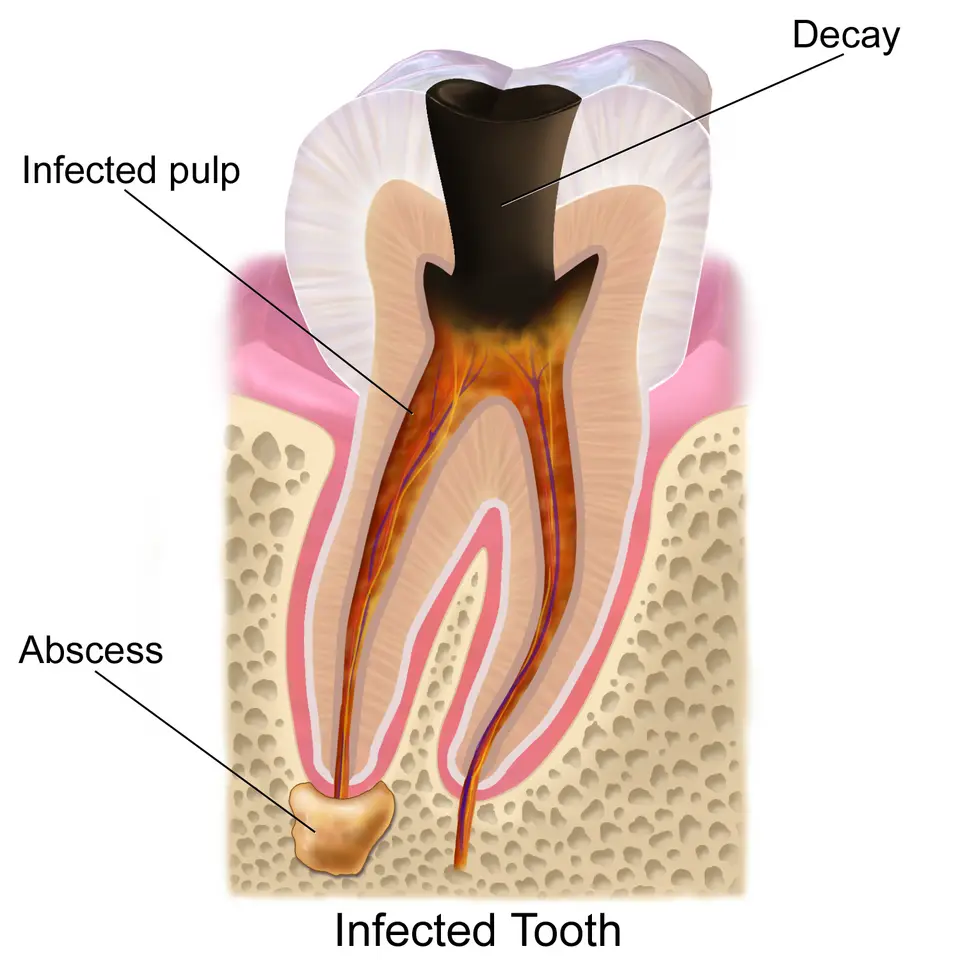

DX.1 — Pulpite dentaire
La pulpite et l'abcès représentent l'essentiel des urgences dentaires zurichoisesS2. Une douleur thermique prolongée, spontanée et nocturne signe la forme irréversible, que seul le geste dentaire guérit, sans antibiotiqueS3S5.
1. Définition
La pulpite est l'inflammation de la pulpe dentaire, dont les signes varient selon qu'elle est réversible ou irréversibleS3. La pulpite réversible correspond à une inflammation qui doit guérir après la suppression de sa cause, par exemple une carieS5. La pulpite irréversible correspond à une pulpe vivante et enflammée, devenue incapable de guérir, avec ou sans douleur spontanéeS5. L'école genevoise range la pulpite aiguë irréversible dans la catégorie III de Baume, qui réunit les pulpes vivantes justifiant une biopulpectomieS1.
2. Épidémiologie (Suisse, puis Europe)
La policlinique de chirurgie orale de l'Université de Zurich traite 100 à 150 urgences par semaine, et son responsable y observe une augmentation des pulpitesS2. Près des deux tiers de ces patients n'ont pas de médecin-dentiste attitré, ou ils ne l'ont pas consulté depuis longtempsS2. Les chiffres utiles rassemblent les données suisses, puis européennes, et le terrain et les facteurs de recours explique qui consulte en urgence.
Chiffres utiles : Suisse, puis Europe
| Donnée | Valeur | Population et année | Source |
|---|---|---|---|
| Urgences dentaires traitées | 100 à 150 par semaine | Policlinique de chirurgie orale, Zurich, 2013 | S2 |
| Patients sans suivi dentaire régulier | Près des deux tiers | Urgences zurichoises, 2013 | S2 |
| Douleur dentaire du dernier mois | 7 % en 1990, puis 12 % en 2014 | Adultes finlandais de 25 à 64 ans | S6 |
| Effectif de l'enquête finlandaise | 63 372 participants dentés | Enquêtes annuelles 1990-2014 | S6 |
| Intensité moyenne de la pulpite irréversible symptomatique | 8 sur 10 | Revue britannique, 2025 | S5 |
| Douleurs « dentaires » dues au seul trouble temporo-mandibulaire | 8 %, et facteur majeur dans 20 % | Service d'endodontie, cité en 2025 | S5 |
Le chiffre finlandais mesure une douleur dentaire déclarée et non une pulpite confirmée, ce qui en fait un ordre de grandeurS6. La dernière ligne rappelle qu'une douleur attribuée à une dent peut provenir de l'articulation, ce qui impose un examen completS5.
Terrain et facteurs de recours
Le responsable zurichois juge la plupart des urgences évitables, car elles touchent surtout des patients qui ne se font pas soigner régulièrementS2. La pulpite irréversible symptomatique constitue, selon la revue britannique, le motif le plus fréquent de soins dentaires urgentsS5. Elle impose presque toujours un antalgique et entraîne souvent un arrêt de travail, ce qui lui donne un poids social réelS5.
| Facteur | Lien avec la pulpite | Source |
|---|---|---|
| Carie profonde, pénétrante ou perforante | La carie progresse vers la pulpe et déclenche l'inflammation. | S1 |
| Obturation ancienne volumineuse | Elle accompagne souvent la pulpite aiguë irréversible à la radiographie. | S1 |
| Fêlure ou fissure d'une cuspide | Elle peut provoquer une douleur, parfois spontanée, sans carie visible. | S1 |
| Absence de suivi dentaire | Elle laisse la carie évoluer jusqu'à l'urgence. | S2 |
3. Physiopathologie
La pulpe occupe le centre de la dent, sous la dentine et l'émail, et contient nerfs et vaisseaux qui entrent par l'apex de la racineS7. La base anatomique montre ces couches, la cascade inflammatoire explique la douleur, et la progression vers la nécrose relie la pulpite à l'abcès du DX.2.
Base à connaître : la dent et sa pulpe
L'émail recouvre la couronne, la dentine forme le corps de la dent, et la pulpe remplit la chambre pulpaire puis les canaux radiculairesS7. La pulpe contient peu de mécanorécepteurs, de sorte que la douleur pulpaire reste mal localisée tant que le desmodonte n'est pas touchéS5.
Anatomie d'une molaire. Ce schéma de Blausen Medical montre en coupe une molaire inférieure, ses couches et son ancrage dans l'osS7.

Le lecteur repère d'abord seul, sur l'image brute, l'émail, la dentine, la chambre pulpaire et l'apex, puis il ouvre la copie annotée.
- 1. L'émail protège la couronne ; une carie qui le franchit atteint ensuite la dentineS1S7.
- 2. La dentine transmet les stimulations thermiques vers la pulpe, ce qui explique la sensibilité au froidS5S7.
- 3. La chambre pulpaire contient le tissu enflammé que le dentiste ampute lors de la pulpotomieS1S7.
- 4. Le canal radiculaire prolonge la pulpe ; le dentiste ne le pénètre pas lors du geste d'urgence genevoisS1S7.
- 5. L'apex laisse passer nerfs et vaisseaux ; une lyse osseuse à ce niveau signe l'atteinte apicaleS1S7.
- 6. L'os alvéolaire reste intact dans la pulpite ; son atteinte relève de la parodontite apicaleS1S5.
Ce que l'image décide. Tant que l'inflammation reste dans la chambre pulpaire, la dent est vivante et conservable par un traitement de la pulpeS4.

Cascade inflammatoire et sensibilisation
| Étape | Mécanisme | Traduction clinique | Source |
|---|---|---|---|
| 1. Agression bactérienne | Les bactéries de la carie ou d'une obturation non étanche atteignent la pulpe. | La pulpite débute, d'abord réversible. | S4S5 |
| 2. Médiateurs de l'inflammation | Ils stimulent en permanence les fibres C de la pulpe. | Une douleur spontanée apparaît. | S1 |
| 3. Œdème dans une chambre inextensible | L'œdème pulpaire augmente avec la température. | La douleur devient pulsatile et s'aggrave au chaud. | S1 |
| 4. Sensibilisation périphérique et centrale | Le ganglion trigéminal et le noyau du tronc cérébral amplifient le signal. | La douleur irradie et devient mal localisée. | S5 |
| 5. Résistance à l'anesthésie | Les canaux ioniques et les nocicepteurs restent actifs malgré l'anesthésique local. | L'anesthésie est plus difficile à obtenir. | S5 |
Le décubitus aggrave la douleur, ce que l'équipe genevoise relie à l'augmentation de la pression dans la pulpe enflamméeS1. Cette sensibilisation explique pourquoi une douleur dentaire peut être ressentie dans une dent voisine ou dans l'autre mâchoireS5.
De la pulpite à la nécrose et à l'abcès
Sans traitement, la pulpite aiguë irréversible évolue vers la nécrose pulpaire, que l'école genevoise classe en catégorie IVS1. La pulpe nécrosée infecte ensuite la dentine radiculaire et peut provoquer une parodontite apicale, un abcès ou une cellulite maxillaireS1.
Dent infectée. Ce schéma de Blausen Medical montre une carie profonde, une pulpe infectée et un abcès à l'apex d'une racineS8.

Le lecteur suit seul, sur l'image brute, le trajet de l'infection depuis la couronne jusqu'à l'os, puis il ouvre la copie annotée.
- 1. La carie franchit l'émail et la dentine ; une carie perforante accompagne la pulpite aiguë irréversibleS1S8.
- 2. La pulpe infectée correspond au stade de pulpite, puis de nécrose si rien n'est faitS1S8.
- 3. L'abcès apical marque le passage au DX.2 : la dent devient sensible à la percussion et ne répond plus au froidS1S5.
- 4. L'os alvéolaire autour de l'abcès montre une lyse visible sur la radiographie apicaleS1S8.
Ce que l'image décide. La présence d'une lésion apicale fait sortir du diagnostic de pulpite et impose le traitement canalaire ou l'extractionS4S5.

4. Démarche diagnostique
La démarche suit trois temps : reconnaître une douleur d'origine pulpaire, préciser son caractère réversible ou irréversible, puis écarter une atteinte apicaleS4S5. Les étapes chiffrées de la démarche donnent l'ordre des gestes, et le tableau différentiel sépare la pulpite des autres douleurs faciales du lot.
Étapes de la démarche, de l'accueil à l'orientation
| Étape | Question | Geste | Résultat qui oriente | Source |
|---|---|---|---|---|
| 1 | La douleur menace-t-elle les voies aériennes ou s'accompagne-t-elle de fièvre et de tuméfaction ? | Recherche d'un trismus, d'une tuméfaction et d'une dysphagie. | Un signe présent oriente vers l'abcès du DX.2 ou vers une cellulite. | S1S5 |
| 2 | La douleur est-elle provoquée ou spontanée ? | Anamnèse de la durée après le froid et des réveils nocturnes. | Une douleur spontanée et nocturne oriente vers l'irréversibilité. | S3S5 |
| 3 | Quelle dent est en cause ? | Inspection de la carie ou de l'obturation, test au froid dent par dent. | La dent causale reproduit la douleur familière. | S1S5 |
| 4 | La pulpe est-elle vivante ? | Test au froid, complété au besoin par le test électrique. | Une réponse présente signe une pulpe vivante. | S4 |
| 5 | L'apex est-il atteint ? | Percussion axiale et radiographie apicale. | Une percussion douloureuse avec lyse apicale oriente vers la parodontite apicale. | S1S4 |
| 6 | La douleur est-elle vraiment dentaire ? | Examen des muscles masticateurs, de l'articulation et des nerfs. | Un examen dentaire normal oriente vers une cause non dentaire. | S5 |
Le médecin de premier recours assure les étapes 1, 2 et 6, puis adresse au médecin-dentiste qui pratique les tests et la radiographieS3.
Diagnostics différentiels du lot
| Diagnostic | Élément qui le distingue de la pulpite | Source |
|---|---|---|
| Abcès dentoalvéolaire (DX.2) | La dent ne répond plus au froid, devient sensible à la percussion et montre une lyse apicale. | S1S5 |
| Trouble temporo-mandibulaire (DX.3) | La douleur sourde peut se projeter sur les molaires, mais le test au froid reste normal. | S5 |
| Sinusite maxillaire aiguë (DX.4) | Plusieurs dents supérieures deviennent sensibles ensemble, sans carie causale. | S5 |
| Péricoronarite (DX.5) | La gencive qui recouvre une dent de sagesse en éruption est enflammée, la pulpe est saine. | S5 |
| Névralgie du trijumeau (DX.8) | Des décharges brèves, déclenchées par le toucher, surviennent sans dent sensible au froid. | S5 |
| Fêlure dentaire | La morsure sur un rouleau de coton reproduit la douleur, alors que le froid ne la prolonge pas. | S1 |
| Douleur neuropathique post-traumatique | Une brûlure continue persiste plus de trois mois après un soin, sans réveil nocturne. | S5 |
Le test au froid reste donc le pivot de cette démarche, car il confirme la vitalité et désigne la dent causaleS4S5.
Chez l'enfant et l'adolescent, l'apex encore ouvert change le geste, car il permet de conserver la pulpe radiculaire.
Dent temporaire ou dent permanente immature
| Situation | Symptômes et tests | Geste genevois | Source |
|---|---|---|---|
| Carie pénétrante symptomatique, apex non fermé | Douleur spontanée en principe localisée ; froid ++, chaud absent ou faible, percussion indolore | Anesthésie, puis coiffage avec un ciment à base de corticoïde ; nouveau coiffage classique après rémission | S1 |
| Échec du coiffage ou carie perforante, apex non fermé | Fortes douleurs spontanées parfois irradiées ; froid +++, chaud variable, percussion variable | Biopulpotomie, avant la biopulpectomie réservée à l'apex fermé | S1 |
| Pulpite hyperplasique (polype pulpaire) | Masse charnue issue d'une carie très étendue ; test de vitalité négatif, percussion indolore | Évaluation de la restaurabilité, puis traitement pulpaire | S1 |
| Dent temporaire vivante avec pulpite irréversible | Douleur spontanée et prolongée | Pulpotomie | S3 |
L'école genevoise privilégie la conservation de la vitalité chez le jeune, ce qui correspond à la catégorie II de BaumeS1. La recommandation écossaise réserve de même la pulpotomie aux dents temporaires vivantes atteintes de pulpite irréversibleS3.
5. Anamnèse ciblée et drapeaux rouges
L'anamnèse précise la durée de la douleur après un stimulus, son caractère spontané, ses réveils nocturnes et la prise d'antalgiquesS5. Les questions ciblées traduisent chaque réponse en hypothèse, le profil typique et atypique évite les erreurs, et les drapeaux rouges imposent l'urgence.
Questions ciblées et interprétation
| Question | Réponse évocatrice | Interprétation | Source |
|---|---|---|---|
| Combien de temps dure la douleur après le froid ? | Au plus 2 secondes | Pulpite réversible | S5 |
| Combien de temps dure la douleur après le froid ? | Plus de 30 secondes | Pulpite irréversible symptomatique | S5 |
| La douleur survient-elle sans stimulus ? | Oui, et elle réveille la nuit | Pulpite irréversible | S3 |
| Le chaud ou le froid aggrave-t-il la douleur ? | Le chaud aggrave, le froid soulage | Stade avancé de pulpite irréversible | S3S5 |
| La position couchée change-t-elle la douleur ? | Elle l'aggrave | Pulpite aiguë irréversible | S1 |
| La morsure déclenche-t-elle la douleur ? | Oui, de façon localisée | Fêlure ou atteinte apicale | S1S5 |
| Un soin récent a-t-il été fait sur la dent ? | Oui, avec brûlure continue depuis plus de trois mois | Douleur neuropathique post-traumatique | S5 |
Profil typique et profil atypique
| Forme | Profil typique | Ce qui le rend atypique | Source |
|---|---|---|---|
| Pulpite réversible | Une gêne brève au froid ou au sucré cède en une à deux secondes. | Une douleur spontanée fait douter de la réversibilité. | S5 |
| Pulpite irréversible symptomatique | Une douleur sourde et pulsatile dure des heures et réveille la nuit. | Une douleur bien localisée à la morsure évoque plutôt l'apex. | S3S5 |
| Pulpite irréversible asymptomatique | Aucun symptôme n'existe malgré une carie extrêmement profonde. | La découverte est radiologique et non clinique. | S5 |
| Pulpite purulente | Des douleurs intenses et lancinantes irradient, avec une réponse au froid très exacerbée. | La fièvre et la tuméfaction orientent vers l'abcès. | S1 |
La douleur irréversible reste souvent difficile à rattacher à une seule dent, ce qui explique la valeur du test dent par dentS3S5.
Drapeaux rouges et conduite immédiate
| Drapeau rouge | Hypothèse | Conduite | Source |
|---|---|---|---|
| Tuméfaction faciale, fièvre ou trismus | Infection étendue au-delà de la dent | Avis dentaire ou maxillo-facial le jour même (DX.2) | S1S5 |
| Antalgie optimale inefficace | Pulpite irréversible non contrôlée | Soins dentaires urgents | S3 |
| Patient sous immunosuppresseurs ou diabète non contrôlé | Patient à risque en chirurgie orale | Concertation avec le médecin traitant avant le geste | S2 |
| Brûlure continue après un soin, sans cause dentaire | Douleur neuropathique post-traumatique | Orientation précoce vers un centre spécialisé | S5 |
Le congrès zurichois de la Société suisse des médecins-dentistes (SSO) a rappelé que les patients immunodéprimés ou diabétiques non équilibrés exigent des précautions particulières en chirurgie oraleS2.
Une douleur à la mastication sans carie visible doit faire rechercher une fêlure de cuspide, que l'école genevoise traite comme une urgence de catégorie I.
Fêlure ou fissure de cuspide
| Élément | Constatation | Source |
|---|---|---|
| Douleur | Douleur localisée à la mastication, sans douleur spontanée, sauf en cas de fissure centrale | S1 |
| Froid | Légère sensibilité avec rémission rapide | S1 |
| Chaud et percussion | Réponses négatives | S1 |
| Test de morsure | La morsure sur un rouleau de coton reproduit la douleur décrite | S1 |
| Instrument dédié | Un instrument de morsure par cuspide aide à repérer la cuspide fêlée | S5 |
| Traitement | Ablation de l'ancienne restauration, composite et contrôle minutieux de l'occlusion | S1 |
L'équipe genevoise prévoit une gouttière en cas de bruxisme, car le serrement entretient la fissureS1. Cette situation explique qu'une dent vivante puisse faire mal sans pulpite, ce que confirme la brièveté de la réponse au froidS1.
6. Examen physique ciblé, région par région
L'examen suit un ordre fixe : visage et cou, articulation et muscles, cavité buccale, puis la dent suspecteS5. Chaque région dispose d'une fenêtre : visage et cou, articulation et muscles, cavité buccale et dent suspecte.
Région 1 — visage et cou
| Geste | Normal | Anormal et signification | Source |
|---|---|---|---|
| Inspection du visage | Symétrie conservée | Une tuméfaction oriente vers un abcès ou une cellulite (DX.2). | S1S5 |
| Palpation des ganglions cervicaux | Ganglions non palpables | Une adénopathie douloureuse oriente vers une infection diffusée. | S5 |
| Palpation des glandes salivaires majeures | Glandes souples et indolores | Une glande tendue oriente vers une cause salivaire. | S5 |
Un visage et un cou normaux plaident pour une inflammation encore confinée à la dentS1.
Région 2 — articulation temporo-mandibulaire et muscles masticateurs
| Geste | Normal | Anormal et signification | Source |
|---|---|---|---|
| Palpation des masséters et des temporaux | Palpation indolore | Une douleur familière oriente vers un trouble temporo-mandibulaire (DX.3). | S5 |
| Palpation de l'articulation | Mouvement libre et indolore | Un craquement ou une douleur oriente vers l'articulation. | S5 |
| Ouverture buccale | Ouverture complète | Une limitation impose de rechercher une infection ou un trouble articulaire. | S5 |
La douleur musculaire projette surtout vers les molaires inférieures et les prémolaires supérieures, ce qui piège le diagnostic dentaireS5.
Région 3 — cavité buccale
| Geste | Normal | Anormal et signification | Source |
|---|---|---|---|
| Inspection des muqueuses | Muqueuse rose et intacte | Une lésion muqueuse oriente vers une autre cause de douleur. | S5 |
| Inspection de la gencive | Gencive sans voussure | Une voussure ou une fistule oriente vers l'atteinte apicale. | S5 |
| Recherche des caries et des obturations | Dents intactes | Une carie perforante ou une obturation volumineuse oriente vers la dent causale. | S1 |
Région 4 — la dent suspecte
| Test | Pulpite réversible | Pulpite irréversible | Parodontite apicale | Source |
|---|---|---|---|---|
| Froid | Réponse positive ou exagérée, brève | Réponse exacerbée et prolongée | Réponse absente | S1S3S5 |
| Chaud | Réponse absente | Réponse possible, parfois plus forte qu'au froid | Réponse absente | S1S5 |
| Percussion | Indolore | Indolore ou parfois douloureuse | Douloureuse | S1S3S5 |
| Morsure sur rouleau de coton | Indolore | Indolore | Douloureuse | S1S5 |
Dans la pulpe saine ou réversible, la douleur provoquée par le froid est brève, car elle cède en une à deux secondesS5. Elle persiste au-delà de 30 secondes dans la forme irréversibleS5. La percussion reste un test moins sensible et moins spécifique que le froid, et elle sert surtout à repérer l'atteinte apicaleS5.
7. Approche syndromique
Le syndrome pulpaire réunit une douleur dentaire provoquée ou spontanée, une dent vivante et l'absence de signe apicalS4S5. Le tableau des syndromes relie chaque groupement de signes au diagnostic, et l'irradiation de la douleur explique les pièges de localisation.
Syndromes et diagnostics correspondants
| Syndrome | Signes réunis | Diagnostic | Source |
|---|---|---|---|
| Syndrome pulpaire provoqué | Douleur brève au froid, absence de douleur spontanée, percussion indolore | Pulpite réversible | S3S5 |
| Syndrome pulpaire spontané | Douleur prolongée, nocturne, aggravée au chaud, dent vivante | Pulpite irréversible symptomatique | S3S5 |
| Syndrome apical | Dent non vivante, percussion douloureuse, lyse apicale | Parodontite apicale (DX.2) | S1S5 |
| Syndrome myofascial | Douleur sourde, muscles sensibles, dents saines au froid | Trouble temporo-mandibulaire (DX.3) | S5 |
| Syndrome neuropathique | Brûlure continue après un soin, sommeil préservé | Douleur neuropathique post-traumatique | S5 |
Irradiation de la douleur pulpaire
Tous les neurones sensitifs de la face ont leur corps cellulaire dans le ganglion trigéminal, ce qui favorise la diffusion de l'excitation aux neurones voisinsS5. La douleur peut donc être projetée vers une autre dent, la tempe ou l'oreille, alors que la dent causale reste uniqueS5. L'école genevoise décrit d'ailleurs des douleurs parfois irradiées lorsque la pulpite d'une dent immature échappe au coiffageS1.
Deux douleurs non dentaires imitent souvent la pulpite : le trouble temporo-mandibulaire et la douleur neuropathique post-traumatique.
Douleurs non dentaires qui imitent la pulpite
| Trait | Trouble temporo-mandibulaire | Douleur neuropathique post-traumatique | Source |
|---|---|---|---|
| Qualité | Douleur sourde et lancinante | Brûlure ou démangeaison, difficile à décrire | S5 |
| Projection | Vers les molaires et les prémolaires | Dans le territoire d'une branche du trijumeau | S5 |
| Durée | Variable, liée à la mastication | Continue, persistante ou récurrente plus de trois mois | S5 |
| Sommeil | Peu informatif | Préservé | S5 |
| Terrain | Aggravation par une ouverture buccale prolongée | Femme de 40 à 50 ans, fardeau psychosocial élevé | S5 |
| Fréquence | 8 % des fausses douleurs dentaires | 0,3 à 1,6 % après traitement canalaire et 5 % après apicectomie | S5 |
| Conduite | Gestes doux, pauses, cale de morsure, autogestion après le soin | Orientation précoce vers un centre spécialisé | S5 |
Aucun test ne confirme la douleur neuropathique, et seule l'association des symptômes et de l'examen fait monter ou baisser la suspicionS5. Le traitement canalaire peut lui-même aggraver un trouble temporo-mandibulaire, parce qu'il exige une ouverture buccale prolongéeS5.
8. Diagnostic positif et critères
Le diagnostic positif repose sur l'association de l'histoire douloureuse, de la réponse au froid, de la percussion et de la radiographieS4. Les critères par forme fixent les seuils, et la classification genevoise de Baume relie chaque catégorie à son traitement.
Critères diagnostiques par forme
| Forme | Symptômes | Signes et examens | Source |
|---|---|---|---|
| Pulpe normale | Aucune douleur spontanée ni sensibilité | Réponse au froid qui cède en une à deux secondes | S5 |
| Pulpite réversible | Gêne au froid ou au sucré de deux secondes au plus | Percussion indolore, aucune image apicale | S5 |
| Pulpite irréversible symptomatique | Douleur spontanée, nocturne, irradiée | Douleur familière plus de 30 secondes après le stimulus thermique ; test électrique souvent positif | S5 |
| Pulpite aiguë irréversible (Genève) | Douleur intense, pulsatile, aggravée par la température et le décubitus | Carie perforante ou obturation volumineuse, sans lyse osseuse apicale | S1 |
| Nécrose pulpaire | Pas de symptôme pulpaire | Absence de réponse aux tests de sensibilité | S5 |
La Société européenne d'endodontologie (ESE) propose de combiner l'histoire douloureuse avec l'exposition pulpaire, la percussion et la douleur au chaud pour estimer l'état de la pulpeS4.
Classification de Baume utilisée à Genève
| Catégorie | Description | Traitement visé | Source |
|---|---|---|---|
| I | Pulpe vivante sans symptôme, lésée accidentellement ou proche d'une carie profonde | Protection par coiffage | S1 |
| II | Pulpe vivante avec symptômes, surtout chez le jeune | Conservation de la vitalité par coiffage ou biopulpotomie | S1 |
| III | Pulpe vivante dont l'ablation est indiquée, dont la pulpite aiguë irréversible et purulente | Biopulpectomie suivie d'obturation radiculaire | S1 |
| IV | Pulpe nécrosée, avec ou sans complication apicale | Traitement endodontique antiseptique et obturation apicale | S1 |
Cette classification symptomatologique remonte à 1962 et elle garde un but thérapeutique, car chaque catégorie appelle un geste précisS1.
9. Examens complémentaires
Les examens ciblés appartiennent au médecin-dentiste : tests de sensibilité, percussion et radiographies dentaires, que le médecin de premier recours ne remplace pasS1S3. Les tests de sensibilité chiffrés, les radiographies et les interprétations combinées donnent la conduite selon chaque résultat.
Tests de sensibilité et valeur diagnostique
| Test | Recommandation | Valeur rapportée | Source |
|---|---|---|---|
| Test au froid | L'ESE suggère son usage pour évaluer la vitalité pulpaire. | Excellente sensibilité et spécificité, surtout associé au test électrique | S4S5 |
| Test électrique | L'ESE le propose en complément du froid. | Seuil parfois abaissé dans la pulpite irréversible | S4S5 |
| Percussion | Elle complète l'examen sans trancher seule. | Sensibilité et spécificité plus faibles | S5 |
| Oxymétrie pulsée de la pulpe | Elle mesure le flux sanguin réel. | Sensibilité et spécificité jusqu'à 98 %, outil encore peu disponible | S5 |
| Biomarqueurs de l'inflammation | L'ESE ignore s'ils prédisent l'état pulpaire. | Aucune valeur établie | S4 |
Radiographies dentaires
| Examen | Indication | Résultat dans la pulpite | Source |
|---|---|---|---|
| Radiographie interproximale (bite-wing) | Dent postérieure suspecte | Carie perforante ou obturation ancienne volumineuse | S1 |
| Radiographie apicale | Toute dent suspecte | Absence de lyse osseuse apicale | S1 |
| Radiographie apicale dans l'atteinte apicale | Suspicion de parodontite apicale | L'ESE la recommande fortement en routine | S4 |
| Tomographie volumique à faisceau conique | Doute diagnostique persistant | Complément possible selon l'ESE | S4 |
Une radiographie apicale normale n'exclut pas une pulpite irréversible, car les changements apicaux n'y sont que possiblesS5.
Interprétation combinée et conduite
| Froid | Percussion | Radiographie | Conclusion | Conduite | Source |
|---|---|---|---|---|---|
| Douleur qui cède en 2 s au plus | Indolore | Pas de lésion apicale | Pulpite réversible | Retrait de la cause et restauration | S3S5 |
| Douleur de plus de 30 s | Indolore ou douloureuse | Pas de lésion apicale | Pulpite irréversible | Pulpotomie ou traitement canalaire | S4S5 |
| Absence de réponse | Douloureuse | Lyse apicale | Nécrose avec parodontite apicale | Traitement canalaire ou extraction (DX.2) | S1S5 |
| Réponse normale | Indolore | Normale | Cause non dentaire probable | Examen musculaire, articulaire et neurologique | S5 |
10. Arbre décisionnel
L'arbre décisionnel enchaîne les questions de la démarche jusqu'au geste, au traitement et au suiviS3S4.
Arbre décisionnel devant une douleur dentaire
- Le médecin cherche une tuméfaction, de la fièvre ou un trismus ; si l'un existe, il oriente le jour même vers le dentiste ou le chirurgien maxillo-facialS1S5.
- Sinon, il prescrit une antalgie optimale, sans antibiotique, et adresse au médecin-dentisteS3.
- Si l'antalgie échoue, il demande des soins dentaires urgents plutôt qu'un rendez-vous ordinaireS3.
- Le dentiste teste la dent au froid ; une douleur brève sans percussion douloureuse conduit au traitement de la carieS3S5.
- Une douleur prolongée et spontanée conduit à la pulpotomie complète ou au traitement canalaire selon l'ESES4.
- Une absence de réponse avec lyse apicale conduit au traitement de la nécrose et de l'atteinte apicale (DX.2)S1S4.
- Une dent saine au froid oriente vers une douleur non dentaire, notamment musculaire ou neuropathiqueS5.
- Après le traitement de la pulpe, le dentiste surveille la dent longtemps et prolonge le suivi si la guérison reste incertaineS4.
11. Prise en charge selon les recommandations suisses
11.A But : le traitement soulage la douleur, supprime la pulpe enflammée et conserve la dent, car l'ESE préfère le traitement pulpaire à l'extraction d'une dent restaurableS4. L'antibiotique n'a pas sa place, car il n'agit pas sur la pulpite irréversible symptomatiqueS3S5. La chronologie de prise en charge fixe les délais de chaque intervenant.
Chronologie de la prise en charge
| Moment | Intervenant | Geste | Raison | Source |
|---|---|---|---|---|
| Premier contact | Médecin de premier recours | Recherche des drapeaux rouges, antalgie optimale, aucun antibiotique | L'antibiotique ne traite pas la pulpite | S3S5 |
| Même jour si l'antalgie échoue | Médecin-dentiste de garde | Soins dentaires urgents | La douleur non contrôlée impose le geste | S3 |
| Séance d'urgence | Médecin-dentiste | Anesthésie locale, puis pulpotomie ou pulpectomie | Le geste opératoire est indispensable | S1S5 |
| Seconde séance | Médecin-dentiste | Mise en forme et obturation des canaux | Le traitement canalaire termine le geste d'urgence | S1 |
| Après le traitement | Médecin-dentiste | Restauration définitive et contrôle prolongé | La restauration étanche conditionne le succès | S4S5 |
11.B Moyens : le geste dentaire selon la forme et le schéma thérapeutique structuré détaillent le traitement, et les fiches de l'information professionnelle suisse (AIPS) précisent le paracétamol et l'ibuprofène.
Geste dentaire selon la forme
| Forme | Geste recommandé | Niveau de recommandation | Source |
|---|---|---|---|
| Pulpite réversible sans exposition pulpaire | Retrait de la carie et restauration, ou pansement provisoire puis restauration | Recommandation écossaise | S3 |
| Pulpite sans douleur spontanée, pulpe exposée | Coiffage direct ou pulpotomie partielle ou complète | Recommandation ouverte de l'ESE, preuve très faible | S4 |
| Pulpite avec douleur spontanée, dent permanente | Traitement canalaire ou pulpotomie complète | Recommandation faible de l'ESE, preuve faible | S4 |
| Pulpite aiguë irréversible à Genève | Amputation de la pulpe camérale sans pénétrer les canaux, pansement temporaire, obturation provisoire étanche | Procédure clinique genevoise | S1 |
| Anesthésie difficile | Pâte corticoïde et antibiotique, puis extirpation différée | Recommandation écossaise | S3 |
| Dent non restaurable | Extraction | Option prévue par les recommandations | S3S5 |
L'équipe genevoise place la dent en sous-occlusion après le geste, afin d'éviter que la mastication n'entretienne la douleurS1. La pâte à base de corticoïde et de tétracycline citée à Genève (Ledermix®) reste un produit d'application dentaire, hors AIPS dans ce cours, sans doseS1S3. L'ESE exige une asepsie rigoureuse, avec digue, éclairage et grossissement, et un ciment hydraulique au silicate de calcium après exposition pulpaireS4.
Schéma thérapeutique structuré
| Situation | Molécule et dose | Durée | Contrôle | Critère d'échec |
|---|---|---|---|---|
| Douleur légère à modérée, adulte de plus de 40 kgS9 | Paracétamol, jusqu'à 4 fois 1 à 2 comprimés de 500 mg par jour, au plus 4000 mg par jour, intervalle de 4 à 8 heuresS9 | Dose efficace la plus faible et durée la plus courte possibleS9 | Douleur jusqu'au geste dentaireS3 | Antalgie inefficace : soins dentaires urgentsS3 |
| Douleur inflammatoire, adulte et adolescent de plus de 12 ansS10 | Ibuprofène, 1 comprimé de 400 mg par prise, toutes les 4 à 6 heures, au plus 1200 mg par jour en automédicationS10 | Au plus 3 jours sans prescription médicaleS10 | Tolérance digestive et rénaleS10 | Douleur persistante : geste dentaire sans délaiS3S5 |
| Douleur sévère avant le gesteS5 | Ibuprofène en dose unique 60 minutes avant le soin, dose selon l'AIPSS5S10 | Prise uniqueS5 | Qualité de l'anesthésie localeS5 | Anesthésie insuffisante : pulpotomie plutôt que pulpectomieS5 |
| Pulpite irréversibleS3 | Aucun antibiotiqueS3S5 | — | Réévaluation par le dentisteS3 | Tuméfaction ou fièvre : abcès du DX.2S1 |
| OpioïdesS5 | Hors AIPS dans ce cours : bénéfice limité et effets indésirables, à éviter selon la revue britanniqueS5 | — | — | — |
La revue britannique propose des doses postopératoires d'ibuprofène plus élevées que l'AIPS suisse en automédication ; ce tableau retient l'AIPS, seule opposable en SuisseS5S10. L'association de l'ibuprofène et du paracétamol semble renforcer l'antalgie, mais une revue récente ne confirme cet effet qu'avec la caféineS5.
Paracétamol — DAFALGAN® Comprimés (n° 46206)
| Rubrique | Contenu de l'AIPS |
|---|---|
| Indication | L'AIPS cite le traitement des douleurs d'intensité faible à moyenne, dont les maux de dentsS9. |
| Dose AIPS | Au-delà de 40 kg et de 12 ans, l'AIPS prévoit jusqu'à 4 fois 1 à 2 comprimés de 500 mg par jour, au plus 4 g par jourS9. |
| Intervalle | L'AIPS impose un intervalle de 4 à 8 heures entre deux prisesS9. |
| Contre-indications | « Hypersensibilité au paracétamol et aux substances apparentées (p.ex. propacétamol) ou à l'un des excipients selon la composition. » · « Troubles sévères de la fonction hépatique (cirrhose hépatique et ascite) / hépatite aiguë ou maladie hépatique décompensée active. » · « Hyperbilirubinémie constitutionnelle héréditaire (maladie de Gilbert). »S9 |
| Grossesse | « En cas de nécessité clinique, le paracétamol peut être pris ou utilisé pendant la grossesse. Toutefois, il convient de prendre ou d'utiliser la dose efficace la plus faible pendant la durée la plus courte possible et à la fréquence la plus basse possible. »S9 |
| Allaitement | « Bien que l'utilisation du paracétamol soit considérée comme compatible avec l'allaitement, la prudence est recommandée lors de l'utilisation du Dafalgan pendant l'allaitement. »S9 |
| Mise à jour | Février 2025S9 |
Le médecin vérifie qu'aucun autre médicament pris par le patient ne contient de paracétamol, car l'AIPS signale ce risque de surdosageS9.
Ibuprofène — Irfen Dolo L / Irfen Dolo L forte (n° 61210)
| Rubrique | Contenu de l'AIPS |
|---|---|
| Indication | L'ibuprofène appartient aux anti-inflammatoires non stéroïdiens (AINS), et l'AIPS autorise un traitement de courte durée des maux de dents, de 3 jours au maximum en automédicationS10. |
| Dose AIPS | La dose simple vaut 1 comprimé de 400 mg, toutes les 4 à 6 heures, au plus 1200 mg par jour en automédicationS10. |
| Contre-indications | « Hypersensibilité au principe actif ou à l'un des excipients selon la composition. » · « Anamnèse de bronchospasme, d'urticaire ou de symptômes semblables à une manifestation allergique après la prise d'acide acétylsalicylique ou d'autres anti-inflammatoires non stéroïdiens. » · « Troisième trimestre de la grossesse » · « Ulcères gastriques et/ou duodénaux actifs ou saignements gastro-intestinaux. » · « Maladies intestinales inflammatoires (p.ex. maladie de Crohn, colite ulcéreuse). » · « Troubles sévères de la fonction hépatique (cirrhose hépatique et ascite). » · « Insuffisance rénale sévère (clairance de la créatinine <30 ml/min). » · « Insuffisance cardiaque sévère (NYHA III–IV). »S10 |
| Grossesse | « Pendant les premier et deuxième trimestre de grossesse, l'ibuprofène ne doit être administré qu'en cas de nécessité absolue. »S10 |
| Allaitement | « Les AINS passent dans le lait maternel. Par mesure de précaution, l'ibuprofène ne doit donc pas être administré aux femmes qui allaitent. Si le traitement s'avère indispensable, il convient alors de nourrir l'enfant au biberon. »S10 |
| Mise à jour | Décembre 2024S10 |
Chez la femme qui allaite, le paracétamol devient donc l'antalgique de premier choix, puisque l'AIPS de l'ibuprofène l'écarte par précautionS9S10.
Deux fenêtres complètent les moyens : l'anesthésie locale difficile et la douleur après le soin.
Anesthésie locale difficile dans la pulpite
| Levier | Donnée | Source |
|---|---|---|
| Choix de l'anesthésique | L'articaïne à 4 % adrénalinée s'est montrée plus efficace que la lidocaïne à 2 % pour le bloc alvéolaire inférieur et l'infiltration vestibulaire | S5 |
| Risque nerveux de l'articaïne | Des données récentes de bonne qualité ne retrouvent peut-être pas d'excès de troubles sensitifs | S5 |
| Infiltration intrapulpaire | Tout anesthésique local, jusqu'à 0,5 mL | S5 |
| Anti-inflammatoire préalable | Une dose unique d'ibuprofène une heure avant le soin augmente le succès de l'anesthésie | S5 |
| Geste de repli | La pulpotomie soulage efficacement lorsque la pulpectomie n'est pas réalisable | S5 |
| Indice d'anesthésie suffisante | Une dent qui ne réagit plus au froid ni à la percussion | S5 |
Ces anesthésiques relèvent du médecin-dentiste ; ce cours n'en donne pas la dose, qui reste hors AIPS dans ce texteS5. La revue britannique explique cette résistance par l'activation des nocicepteurs et la modification des canaux ioniques dans la pulpe enflamméeS5.
Douleur après le soin : prévention et conseils
| Mesure | Effet attendu | Source |
|---|---|---|
| Discuter la douleur postopératoire lors du consentement | Le patient anticipe une gêne transitoire | S5 |
| Donner des conseils antalgiques individualisés et écrits | Les niveaux de douleur postopératoire baissent nettement | S5 |
| Prendre l'anti-inflammatoire avant le geste | Il prédit une douleur postopératoire plus faible | S5 |
| Désinfecter soigneusement et restaurer définitivement | Le succès augmente et la douleur diminue | S5 |
| Éviter les opioïdes | Leur bénéfice reste limité et leurs effets indésirables sont fréquents | S5 |
Une douleur qui persiste malgré un traitement réussi oriente vers une cause musculaire, articulaire ou neuropathique, et non vers un échec forcé de la dentS5.
11.C Surveillance : la grille de surveillance précise les critères à contrôler après l'urgence et les signes qui imposent de reprendre la démarche.
Grille de surveillance
| Moment | Critère contrôlé | Résultat attendu | Si anormal | Source |
|---|---|---|---|---|
| Avant le geste | Efficacité de l'antalgie | Douleur contrôlée | Soins dentaires urgents | S3 |
| Après la pulpotomie | Douleur spontanée | Disparition | Revoir la dent et rechercher une autre cause | S5 |
| Pulpite réversible traitée | Symptômes et vitalité | Résolution et pulpe vivante | Reclasser en pulpite irréversible | S5 |
| Après tout traitement pulpaire | Guérison clinique et radiologique | Absence de lésion apicale | Prolonger le suivi ou reprendre le traitement | S4 |
| Douleur persistante malgré un traitement réussi | Muscles, articulation, nerf | Examen normal | Trouble temporo-mandibulaire ou douleur neuropathique | S5 |
L'ESE ne fixe pas de durée de suivi en années, faute de données solides, mais demande une surveillance prolongéeS4.
11.D Pronostic : le pronostic selon la forme dépend du stade de la pulpe et de la qualité de la restauration.
Pronostic selon la forme
| Forme | Évolution traitée | Évolution non traitée | Source |
|---|---|---|---|
| Pulpite réversible | Guérison après suppression de la cause | Passage possible à l'irréversibilité | S5 |
| Pulpite irréversible | Dent conservée après traitement pulpaire ou canalaire | Nécrose, puis atteinte apicale | S1S4 |
| Nécrose pulpaire | Traitement canalaire à faire dès le diagnostic | Abcès, puis cellulite | S1S4 |
| Après traitement canalaire | Succès maximal si désinfection soigneuse et restauration définitive | Douleur neuropathique rare, de 0,3 à 1,6 % | S5 |
La survie de la dent constitue le critère de jugement le plus important retenu par l'ESE pour évaluer ces traitementsS4.
12. Prévention
La prévention vise la carie et l'accès régulier aux soins, car la plupart des urgences zurichoises sont jugées évitablesS2. Les mesures de prévention répartissent les actions entre patient, médecin et médecin-dentiste.
Mesures de prévention
| Niveau | Mesure | Raison | Source |
|---|---|---|---|
| Primaire | Contrôles dentaires réguliers et soins des caries débutantes | Les patients sans dentiste attitré dominent les urgences. | S2 |
| Primaire | Brossage régulier | La fréquence du brossage intervient dans les écarts de douleur dentaire. | S6 |
| Secondaire | Traitement précoce d'une pulpite réversible | La suppression de la cause permet la guérison de la pulpe. | S5 |
| Tertiaire | Restauration définitive étanche après traitement pulpaire | Elle maximise le succès et limite la douleur postopératoire. | S5 |
| Tertiaire | Bon usage des antibiotiques | L'ESE limite leur prescription en endodontie. | S4 |
13. Points clés
- Une douleur au froid qui cède en deux secondes au plus évoque une pulpite réversibleS5.
- Une douleur thermique qui dure plus de 30 secondes, spontanée et nocturne, signe une pulpite irréversibleS5.
- Le médecin prescrit une antalgie optimale et ne prescrit pas d'antibiotiqueS3.
- Le traitement de la pulpite irréversible est opératoire : pulpotomie ou traitement canalaireS4.
- Une tuméfaction, de la fièvre ou un trismus font sortir de la pulpite vers l'abcèsS1.
- Une dent saine au froid oriente vers une douleur musculaire, articulaire ou neuropathiqueS5.
14. Pièges et questions fréquentes à l'examen fédéral suisse
Les pièges portent sur l'antibiotique réflexe, la localisation trompeuse et la confusion avec l'abcès ; la série de questions les entraîneS3S5.
Questions fréquentes à l'examen fédéral
| Question | Réponse | Raison |
|---|---|---|
| Un patient a une pulpite irréversible sans tuméfaction : faut-il un antibiotique ? | Non. | L'antibiotique n'agit pas sur la pulpite (point 11)S3S5. |
| Quelle durée de douleur au froid sépare la forme réversible de la forme irréversible ? | Au plus 2 secondes contre plus de 30 secondes. | Ces seuils figurent dans la classification britannique (point 8)S5. |
| Le froid soulage une douleur aggravée au chaud : quel stade ? | Une pulpite irréversible avancée. | Le chaud devient plus douloureux que le froid à ce stade (point 5)S3S5. |
| La dent ne répond plus au froid et fait mal à la percussion : quel diagnostic ? | Une nécrose avec parodontite apicale. | L'atteinte apicale remplace alors la pulpite (point 9)S1S5. |
| Une femme qui allaite souffre d'une pulpite : quel antalgique choisir ? | Le paracétamol. | L'AIPS de l'ibuprofène l'écarte pendant l'allaitement (point 11)S10. |
| Les dents sont saines au froid, mais les masséters sont douloureux : quelle piste ? | Un trouble temporo-mandibulaire. | Il explique 8 % des fausses douleurs dentaires (point 2)S5. |
| Quel geste d'urgence l'école genevoise pratique-t-elle ? | L'amputation de la pulpe camérale sans pénétrer les canaux. | Ce geste soulage avant la seconde séance (point 11)S1. |
| Faut-il prescrire de la codéine en premier choix ? | Non. | Les opioïdes apportent peu dans la douleur dentaire (point 11)S5. |
| Un enfant a une pulpite sur une molaire à apex ouvert : quel geste viser ? | La biopulpotomie, qui conserve la pulpe radiculaire. | L'apex ouvert permet de préserver la vitalité (point 4)S1. |
| Une douleur à la morsure cède vite au froid, sans carie : quelle hypothèse ? | Une fêlure de cuspide. | Le test du rouleau de coton reproduit la douleur (point 5)S1. |
Sources
Les sources ont été lues le 13.11.2026 (Europe/Zurich) ; une source non européenne est signalée comme telle.
- [S1] Daeniker L, Perroud R (coordinateurs), Krejci I (éditeur), Université de Genève, Clinique universitaire de médecine dentaire, division de cariologie et d'endodontie. Urgences en cariologie, endodontie et médecine dentaire pédiatrique, livre numérique, 2015 ; procédures endodontiques édictées par S. Bouillaguet et J.-P. Carrel (Suisse ; texte intégral lu le 13.11.2026). https://www.unige.ch/medecine/dentaire/application/files/5914/2478/6548/2015-Urgences.compressed_.pdf
- [S2] Revue mensuelle suisse d'odonto-stomatologie (Swiss Dental Journal SSO) 2013;123(5). Multiples facettes des urgences dentaires : coup d'œil sur le congrès 2013 de la SSO, entretien avec M. Locher, policlinique de chirurgie orale, Centre de médecine dentaire de l'Université de Zurich (Suisse ; texte lu le 13.11.2026). https://old.swissdentaljournal.org/fileadmin/upload_sso/2_Zahnaerzte/2_SDJ/SMfZ_2013/SMfZ_05_2013/f-smfz-05-aktuell.pdf
- [S3] Scottish Dental Clinical Effectiveness Programme (SDCEP). Management of Acute Dental Problems — Pulpitis, page de recommandation en ligne (Écosse, Royaume-Uni ; lue le 13.11.2026). https://www.acutedentalproblems.sdcep.org.uk/guidance/management-of-oral-conditions/common-oral-conditions/pulpitis
- [S4] Duncan HF, El-Karim I. Endodontic S3-level clinical practice guidelines: the European Society of Endodontology process and recommendations. Br Dent J 2025;238(7):486-504, doi:10.1038/s41415-025-8335-x, PMC11991915 ; synthèse de la recommandation S3 de la Société européenne d'endodontologie (ESE), Int Endod J 2023;56(Suppl 3):238-295 (Irlande et Royaume-Uni ; texte intégral lu le 13.11.2026). https://doi.org/10.1038/s41415-025-8335-x
- [S5] Edwards D, Allison JR, Coulter J, Durham J, Beecroft EV. Symptomatic irreversible pulpitis and other orofacial pain: overcoming challenges in diagnosis and management. Br Dent J 2025;238(7), doi:10.1038/s41415-025-8441-9, PMC11991903 (Newcastle, Royaume-Uni ; texte intégral lu le 13.11.2026). https://doi.org/10.1038/s41415-025-8441-9
- [S6] Raittio E, Helakorpi S, Suominen AL. Twenty-five-year follow-up of educational differences in toothache prevalence. Community Dent Oral Epidemiol 2020;48(2):171-179, doi:10.1111/cdoe.12516 (Finlande ; résumé lu le 13.11.2026). https://doi.org/10.1111/cdoe.12516
- [S7] Blausen.com staff. Medical gallery of Blausen Medical 2014, WikiJournal of Medicine 1(2), doi:10.15347/wjm/2014.010 : « Tooth Anatomy », CC BY 3.0, Wikimedia Commons, fichier « Blausen 0863 ToothAnatomy 02.png », consulté le 13.11.2026. https://commons.wikimedia.org/wiki/File:Blausen_0863_ToothAnatomy_02.png
- [S8] Blausen.com staff. Medical gallery of Blausen Medical 2014, WikiJournal of Medicine 1(2), doi:10.15347/wjm/2014.010 : « Tooth Decay », CC BY 3.0, Wikimedia Commons, fichier « Blausen 0864 ToothDecay.png », consulté le 13.11.2026. https://commons.wikimedia.org/wiki/File:Blausen_0864_ToothDecay.png
- [S9] Swissmedic, information professionnelle (AIPS) DAFALGAN® Comprimés (paracétamol), n° 46206, UPSA Switzerland AG, mise à jour février 2025, lue le 13.11.2026. https://files.refdata.ch/simis-public-prod/MedicinalDocuments/665471932df943b6be0dd276c4c8f5e9-fr.html
- [S10] Swissmedic, AIPS Irfen Dolo L / Irfen Dolo L forte comprimés pelliculés (ibuprofène), n° 61210, mise à jour décembre 2024, lue le 13.11.2026. https://files.refdata.ch/simis-public-prod/MedicinalDocuments/a8df8a2c27ee43488e52fc84e3e4dc97-fr.html